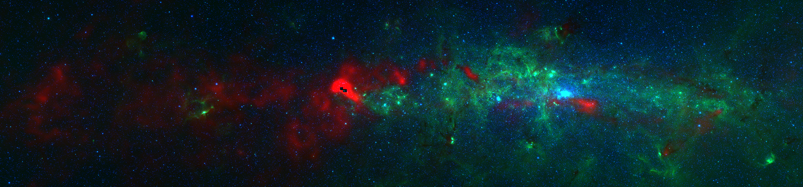
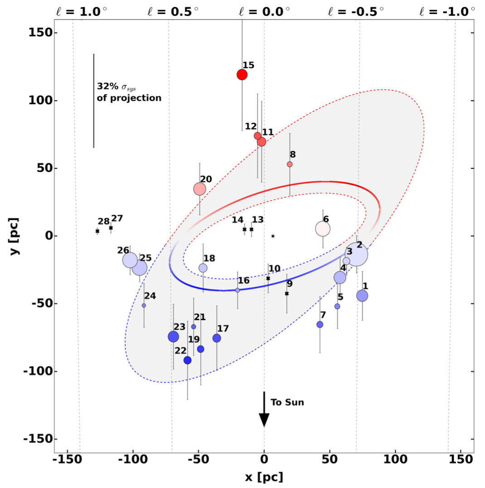
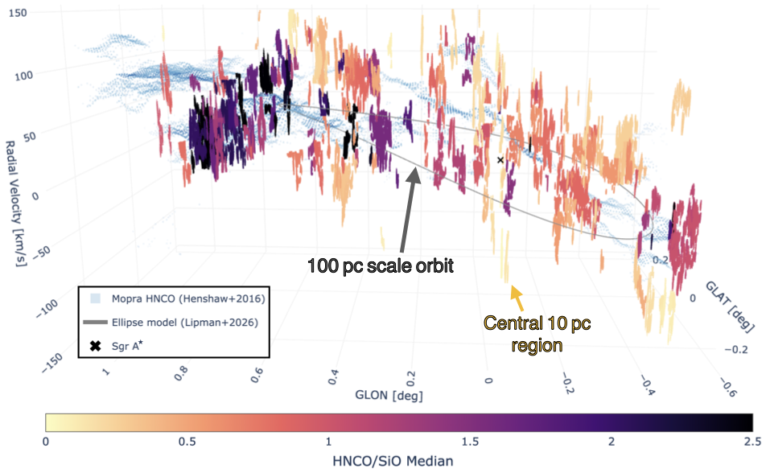
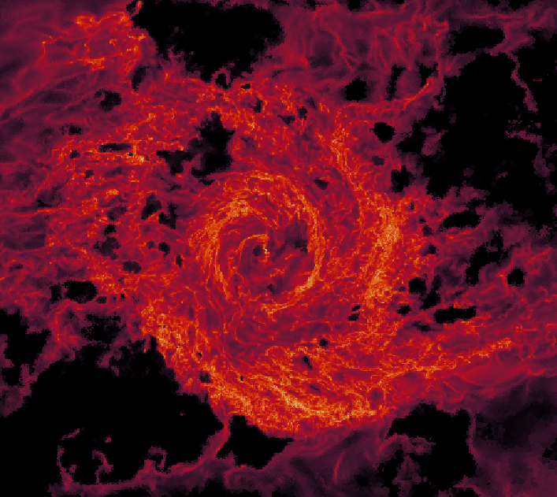

Research

A three-color image of the Milky Way's Central Molecular Zone (CMZ). Red is column density from Herschel, Green is Spitzer 8µm, and Blue is Spitzer 4.5µm.
Galaxy centers control the evolution and energy cycles of galactic nuclei. From the dynamics of gas orbiting and colliding and forming stars, to the feeding of material into the supermassive black holes at their centers, understanding these regions is a key component of modeling the history and evolution of our own Galaxy and our local universe.
I use the center of our own Milky Way Galaxy, the Central Molecular Zone (CMZ), as an example to model other environments. The Milky Way's center is dense, turbulent, and hot, making it a comparable environment to starburst galaxies. It is our nearest and dearest Galactic Center. In other words, perfect for getting an in-depth study of what controls star formation in extreme environments.

From Lipman et al., 2026a showing a top-down view of the best-fitting CMZ orbital model and cataloged molecular cloud positions based on Bayesian synthesis of multi-wavelength data.
Determining the 3D Geometry of the CMZ
Knowing how gas moves around the Galactic Center is a key piece of information for understanding how the Galaxy evolves. When, where, and how many star form is largely connected to where the gas that fuels star formation travels and builds up.
In the 3D CMZ paper series , we present the first ever 3D picture of the CMZ, using multiwavelength data to determine positions of molecular clouds with respect to our suppermassive black hole, SgrA. In Lipman et al., 2025, I presented new dust extinction techniques to distinguish near vs. far positions of CMZ clouds. In Lipman et al., 2026, I created a flexible Bayesian framwork to synthesize information from multi-wavelength datasets, and determined the best fitting orbit in position-position-velocity space. This framework is meant to be continually updated with new data, which promises great improvements for the orbital model with upcoming datasets from JWST and Roman.

From Lipman et al., 2026b showing postion-position-velocity distributions of high-velocity compact clouds in the CMZ, detected in ALMA molecular shock tracers. See the interactive web-app of this figure HERE
Determining the 3D Geometry of the CMZ
The extreme kinematics of the Milky Way's CMZ are influenced by processes such as dynamical shearing, cloud collisions, and stellar feedback. The mass flows in this region are innately tied to its unexplained low star formation rate, projected gas asymmetries, and the transportation of material further inwards towards the supermassive black hole at the center. New observations from the ALMA CMZ Exploration Survey (ACES) provide unprecedented details covering the entire inner 2 degrees of the Galaxy at sub-parsec resolutions in dozens of molecular tracers. I led a study utilizing these data to catalog large disturbances in the average CMZ gas flows referred to as high velocity dispersion compact clouds (HVCCs). We use both visual and algorithmic methods to identify 235 HVCC candidates in shocked ACES CS (2-1) gas, and characterize their kinematic morphologies.

Example density projection from Lipman et al. (in prep)
High Resolution Models of Gas Flows and Star Formation
Combining theory and observation provides us with powerful tools to demystify the complex physics of our Galaxy's center. Observational programs using ground-based instruments (e.g. SMA and ALMA) as well as space-based surveys (e.g. Spitzer, Herschel, JWST, and Roman) have made significant progress towards determining the small-scale distributions of gas in the CMZ. But what mechanisms drive or control star formation? How do the physical processes change our understanding of extreme galactic environments? We still lack a connection between these small scale observations of the Milky Way's CMZ and the large scale models which describe the cycles and evolution of mass inflows and outflows in galaxy centers. I have developed new zoom-in simulations of a Milky Way-like CMZ to provide a physically complex apples-to-apples comparison of CMZ gas dynamics and star formation for large surveys.
Exploring the Inflow of Gas Feeding Galaxy Centers
The outer orbits of the CMZ are a reservoir of gas, slowly feeding material towards the circumnuclear disk (CND) within the central few parsecs near SgrA. But how does that gas get to the center? I use high resolution data from the ACES Survey along with MHD simulations to determine the rate of inflow from the CMZ ring towards the very center of the galaxy. Developing a method to estimate inflow in our own Galactic Center can build a foundational tool for exploring other galaxies, helping us place our Milky Way in the context of the universe we live in.